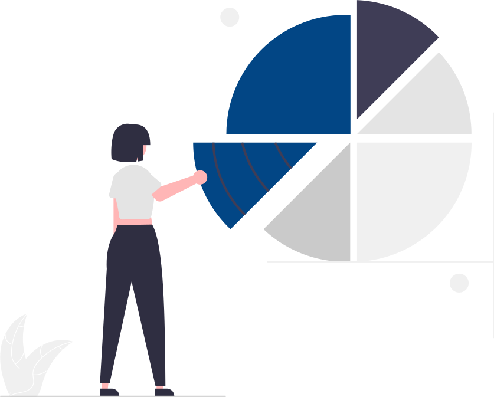
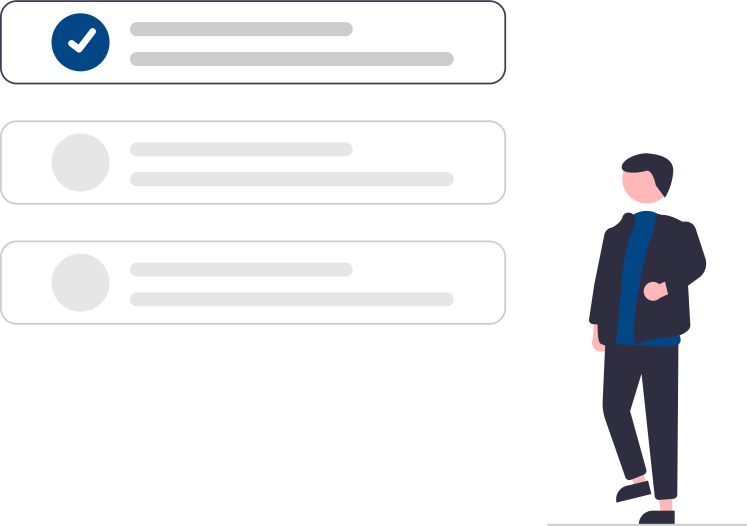
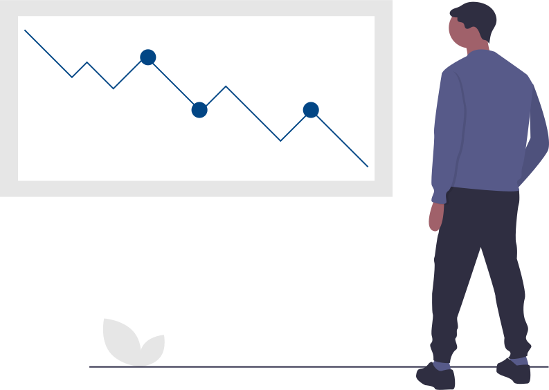
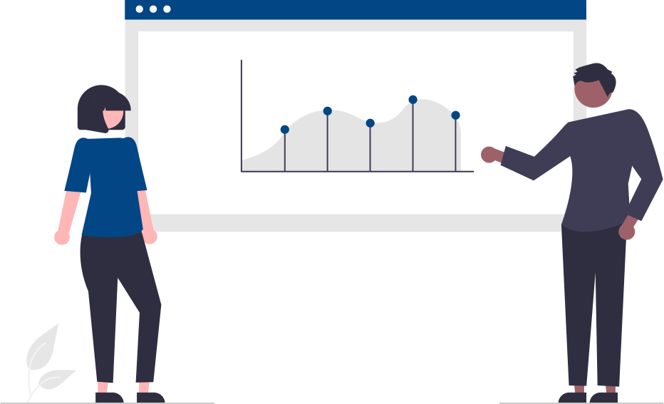

Il core business di B&S si sviluppa attorno alle aree della consulenza evoluta e della litigation.
Il percorso della consulenza evoluta
Metti una brevissima descrizione della consulenza evoluta
Grazie alle consolidate competenze nell’ambito dell’Asset Management e del Risk Management, Benchmark & Style è un partner affidabile per gli investitori istituzionali (enti previdenziali, fondi pensione e family office) che desiderano sviluppare un robusto processo di investimento.
Il modello di consulenza di Benchmark & Style è improntato alla personalizzazione del servizio: grazie al contributo diretto e costante dei Partner - che curano direttamente i rapporti con le controparti - vengono sviluppati modelli finanziari perfettamente tagliati sulle specifiche esigenze della clientela
-
01
RACCOLTA
I consulenti finanziari impegnati nella raccolta del credito necessitano di uno strumento di supporto, da parte di una società indipendente (B&S), per sostenere l'incontro con il cliente.
SAP
Il Servizio di Analisi di Portafoglio svolge uno studio sul portafoglio aggregato del cliente prospect.
Read More -
02
PROFILATURA
Al nuovo cliente verrà somministrato un questionario da parte del consulente per conoscere il suo grado di rischio ed ottenere la proposta di portafoglio in prodotti più adatta.
QUESTIONARIO
Sviluppo del sistema di adeguatezza, profilazione della clientela e creazione del Questionario.
Read More -
03
CREAZIONE DEL PORTAFOGLIO
Il risultato del questionario porta il consulente ad individuare il portafoglio modello sulla frontiera efficiente.
A.A.S.
Creazione delle Asset Allocation Strategiche per profili di rischio e classi di investitori (Private, Affluent, Retail).
Read More -
04
SCELTA DEI PRODOTTI
I portafogli modello in asset class vengono tradotti in prodotti, attingendo da un catalogo di fondi. Occorre creare un metodo di scelta dei prodotti migliori.
RANKING
Selezione dei prodotti in coerenza con le scelte di asset allocation e sulla base di un processo di ranking del catalogo o ottimizzazioni personalizzate.
Read More -
05
MANUTENZIONE DEL PORTAFOGLIO
Il consulente deve mostrarsi pronto a rispondere ad un cambiamento degli scenari di mercato modificando il portafoglio.
A.A.T.
Sviluppo dell'asset allocation tattica, dalla definizione dei limiti, alla ottimizzazione sino alla definizione delle view tattiche.
Read More -
06
CALCOLO DEI RISULTATI
Il consulente presenta periodicamente il risultato della gestione di portafoglio, tenendo conto di ciò che intacca la performance come depositi e dei prelievi.
PERFORMANCE
Sviluppo di modelli personalizzati di monitoraggio periodico e scomposizione della performance.
Read More